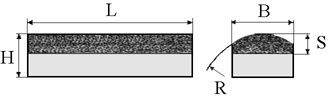

Алмазные бруски имеют следующее обозначение: 
100х12х6х3х60 АСМ 80/63 100 М1 ГОСТ 25594-83
Размеры хонинговального бруска L=100мм, В=12мм, Н=6мм, S=3, R=60.
Выбор размера брусков определяется размерами колодок хонинговальных головок
Выбор марки алмазов и связки в брусках при хонинговании.
| Обрабатываемый материал | Вид операции | Марка алмазов | Марка связки |
|---|---|---|---|
| Улучшенная и нетермообработанная сталь | Черновая Чистовая |
АС15, АС6, АСМ | М1 |
| Закаленная сталь 46-52 HRСэ | Черновая Чистовая |
АС15, АС6 | М5 |
| Закаленная и азотированная сталь 58-65 HRСэ | Черновая Чистовая |
АС20, АС6 | М73 |
| Серый чугун | Черновая Чистовая |
АС20, АС6 | М1 |
| Хромовые покрытия | Черновая Чистовая |
АС15, АС4 | М10 |
Выбор зернистости алмазных брусков.
| Припуск на Ø, мм | Серый чугун | Сталь без Т/О или улучшенная | Сталь закаленная ≥46 HRСэ | |||
|---|---|---|---|---|---|---|
| Зернистость | Ra, мкм | Зернистость | Ra, мкм | Зернистость | Ra, мкм | |
| ≥0,15 | 250/200 | ≥5 | 160/125 | 2,5 | 200/160 | 2,5 |
| 0,1 | 160/125 | 2,5 | 125/100 | 2,5 | 160/125 | 2,5 |
| 0,08 | 125/100 | 2,5 | 100/80 | 1,25 | 125/100 | 1,25 |
| 0,06 | 100/80 | 1,25 | 80/63 | 1,25 | 100/80 | 1,25 |
| 0,04 | 80/63 | 1,25 | 40/28 | 1,25 | 80/63 | 0,63 |
Концентрация алмазов в брусках определяет экономичность операций хонингования. При обработке чугуна используют 50% и 75% концентрацию, при обработке стали – 100%; При обработке отверстий с большими соотношениями l/D, в стальных закаленных деталях применяют 150% концентрацию.
Примеры обозначения алмазных брусков:
БК 20х200 63С 6 С2 7Б ГОСТ 2456-82
Брусок квадратный, ширина 20мм, длина 200 мм, материал абразива – карбид кремния зеленый,
зернистость – 6, твердость С2, бакелитовая связка 7Б.
БП 20х16х150 24А М28 СТ1 К ГОСТ 2456-82
Брусок прямоугольный, ширина 20 мм, высота 16 мм, длина 150 мм, из электрокорунда белого марки
24А, зернистостью М28, твердость СТ1, керамическая связка.
Выбор марки абразивных хонинговальных брусков
| Материал детали | Припуск, в мм на Ø | Шероховатость, Ra, мкм | Марка абразивных брусков | |
|---|---|---|---|---|
| Исходная | Достигаемая | |||
| Закаленная сталь, НВ≥250 | 0,04-0,08 | 2,5 | 1,25 | 24А 10 (С2-СТ2) К |
| 0,03-0,04 | 1,25 | 0,63 | 24А 5 (С2-СТ2) К | |
| 0,01-0,03 | 0,63 | 0,32 | 24А 3 (С1-СТ1) К | |
| Незакаленная сталь, НВ<250 | 0,04-0,07 | 2,5 | 0,63 | 63С 10 (СТ2-Т1) К |
| 0,02-0,04 | 1,25 | 0,63 | 63С М40 (СТ2-Т2) К | |
| 0,003-0,005 | 0,63 | 0,16 | 63С (М14-М28) (СТ1-СТ2) К | |
| Серый чугун | 0,03-0,05 | 2,5 | 1,25 | 63С 10 (СТ2-Т2) К |
| 0,02-0,03 | 1,25 | 0,63 | 63С 6 (СТ2-Т2) К | |
| 0,005-0,008 | 0,63 | 0,32 | 63С (М20-М28) (СТ2-Т2) К | |
| 0,005-0,008 | 0,63 | 0,16 | 63С (М14-М20) (СТ2-Т2) К | |